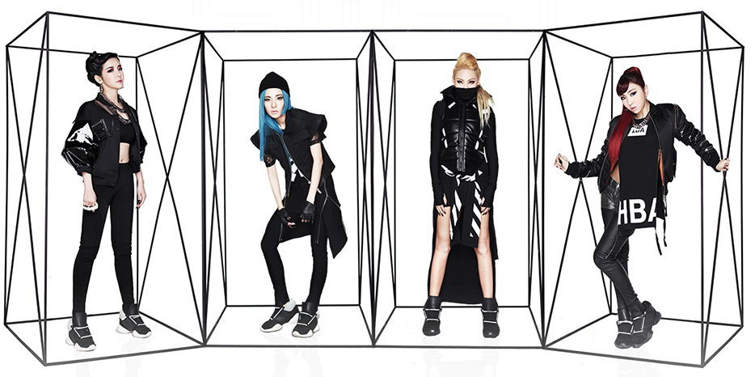

About

When YG Entertainment announced in 2004 that the label was putting together a new girl band, it would take almost five years for the South Korean based record company to release the girls. The first showing was done with the label sharing male band 'Big Bang' and LG Electronics in a commerical campaign.
The first song entitled "I Don't Care" off the their first album was released, later that year it won song of the year at Mnet Asian Music Awards. Three more of the singles was also very successful, "Lonely", "Go Away", and "I Am the Best", with the latter winning "2011 Song of the Year" for their second time.
When the group debuted in Japan in the 2011 they had released a Japanese version of the extended play album "Nolza". Since then they have released two more singles and one studio album entitled "Collections".
The group came to America in 2012, they performed to sold out concert in New Jersey at the Prudential Center. New York Times called the show, one of the best concerts of 2012. Later that year, Forbes Magazine's Zack Greenburg noted that the group had over 27 million downloads